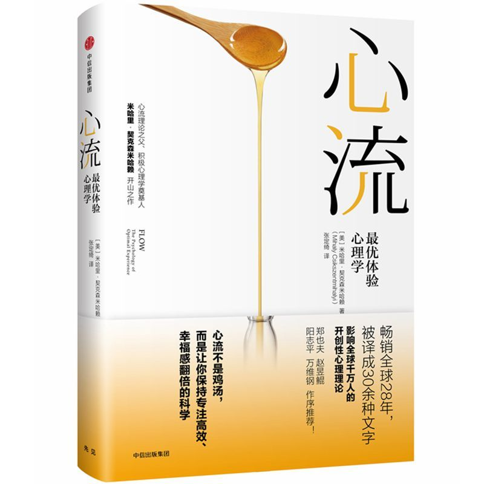

 |
心流：最优体验心理学 |
序一 自造内心秩序之途
幸福源自内心的秩序
米哈里这本书中有三个核心词：一是幸福；二是最优体验，他称之为心流；三是精神熵。我们就从这三个核心词说起。
幸福是今天通吃世俗与学界的热门话题，而米哈里和塞利格曼无疑是当代幸福研究的先驱。
米哈里认为，他所看重的学术风格兼有基础研究和实践应用的贡献。他认为能为幸福研究做出重大贡献的是三个学科：生物学、心理学、社会学，而非当下的一些显学。作为心理学家，生物学与社会学是他的第二只、第三只眼睛。
人类有一个超大的意识系统。意识系统需要秩序，其无序时人们会焦虑、烦躁。生理欲望需要满足。但无论欲望满足上欠缺、适当还是过度，都与意识系统中的秩序较少关联。而“好的生存状态”，英文直译为well being，就是幸福的意思，“好的生存状态”要兼括生理满足与精神系统中的秩序。后者如何获得，是米哈里写作本书的目的所在。米哈里不是从寻常视角去讨论内心的秩序，而是从大自然的秩序之起点开讲，即熵与反熵。
负熵与精神熵
生命现象是个奇迹。它将太阳能转化成生物能，并从无序中发展出有序。薛定谔以物理学家的眼光看到了大自然中的这个反例，称之为“负熵”。负熵就是从无序走向有序的趋势。
米哈里借鉴上述思想提出了“精神熵”。他认为，资讯对人们意识中的目标和结构的威胁，将导致内心失去秩序，就是精神熵。米哈里说“精神熵是常态”，好可怕呀。在他看来精神熵的反面就是最优体验，他称之为“心流”。
我称这本书为奇书，因为它内容新奇，还因为它很难归类，既有科学的成分，似乎也有哲学乃至形而上学的味道，可能是因为作者讨论了一些本质的、科学还难于进入的问题。但是本书中的奇思妙论，不是基于玄想，而是调查。
作者和他的小组访问了职业、学历各异的男女老少。让每个对象佩戴一个电子呼叫器，为期一周。呼叫器每天不定时呼叫8次。呼叫器一响，受测者就要按照满意度的等级，记录当下自己的感觉，并记录当下从事的活动。这些分析记录超过十万份。故最优体验发生于何种活动中，是大规模调查的结果。甚至“心流”一词也非作者自创，而是多数被调查者描述他们的最优体验时所用的词汇：“一股洪流带领着我”。
米哈里这样概括心流的成因和特征。第一，注意力。他说：体验过心流的人都知道，那份深沉的快乐是严格的自律、集中注意力换来的。第二，有一个他愿意为之付出的目标。那目标是什么不要紧，只要那目标将他的注意力集中于此。第三，有即时的回馈。第四，因全神贯注于此，日常恼人的琐事被忘却和屏蔽。第五，达到了忘我的状态。
全神贯注某项活动，精神消耗一定更大，好在当事者心甘情愿——这似乎是常识。但米哈里告诉我们：不对。有实验证明全神贯注减轻了脑力负担。“最合理的解释似乎是：心流较强的那组人能关闭其他资讯的管道，只把注意力集中在接收闪光的刺激上。这使我们联想到，在各种情况下都能找到乐趣的人，有能力对外来刺激进行筛选，只注意与这一刻有关的事物。虽然一般认为，注意力集中时会增加处理资讯的负担，但对于懂得如何控制意识的人而言，集中注意力反而更轻松，因为他们可以把其他不相关的资讯都抛在一旁。他们的注意力同时极具弹性，与精神分裂症患者完全不由自主地注意到所有刺激恰成强烈对比。这种现象称为‘自得其乐的性格’，或许能提供神经学上的解释。”
可以造就心流的活动中必有挑战，且挑战应该是动态的，即当挑战与你的技能匹配时，有了心流。当挑战的目标大大高过你的技能时，将产生焦虑，此时应降低挑战目标。当你的技能高过设定的目标，继续持续这种活动将产生厌倦，便要提升目标，以求挑战和心流的持续。正是在技巧提高、目标上调的过程中，当事者感受到了成长的乐趣。此为幸福之真谛。
自寻目标的时代
米哈里问读者：什么是自得其乐？他自己的回答是：“就是‘拥有自足目标的自我’，大多数人的目标都受生理需要或社会传统的制约，亦即来自外界。自得其乐的人，主要目标都从意识评估过的体验中涌现，并以自我为依据。”
外界向你提供目标时，往往以某种奖励吸引你追随它。世上大多数奖励的动机是控制你。不做外部目标的奴隶，就要拒绝它们的奖励。拒绝外部奖励的最有效的方法是建立“内奖”，即选定你的目标，在追随目标的努力中，获得内心的秩序和成长的乐趣，这就是内奖，就是自我奖励。
在讨论心流与目标时，米哈里还提出了“自成目标”的概念，即目标是做你喜欢做的事情，而非做这件事情的报酬，尽管有时也存在报酬，有时也有社会效益。也就是为艺术而艺术，为科学而科学，为你喜欢的劳作而劳作。米哈里说：“开始时靠目标证明努力的必要，到后来却变成靠努力证明目标的重要性。”“登上山顶之所以重要，只因它证明了我们爬过山，爬山的过程才是真正的目标。”
以上说的是在设置人生目标上个人与社会的关系。接下来说生活中的群己关系。
米哈里在此处妙语连珠。他说：“学习运用独处的时间在童年时期就很重要。十来岁的孩子若不能忍受孤单，成年后就没有资格担负需要郑重其事准备的工作……如果一个人不能在独处时控制注意力，就不可避免地要求助于比较简单的外在手段：诸如药物、娱乐、刺激等任何能麻痹心灵或转移注意力的东西……英国哲学家培根引用一句俗语说：‘喜欢独居的人，不是野兽就是神。’倒不一定是神，但一个人若能从独处中找到乐趣，必须有一套自己的心灵程序，不需要靠文明生活的支持——亦即不需要借助他人、工作、电视、剧场规划他的注意力，就能达到心流状态。”
适当的独处有利于形成“自我”。我一直有一个感觉，国人的“自我”弱于其他民族。表情反映性格。国人的典型表情是嬉皮笑脸，相比而言异族人要严肃得多。我特别喜欢非洲木雕中的一脸肃穆。何以有如此差异？我的分析是，中国人“社会性”太强，打压了“自我”，使我们每每逢迎他人。缺少独处就缺少自我，而无个性的人组成的社会是缺少美感的。
心流与庖丁解牛
米哈里的调查就是好的调查。其一，该调查发现，心流的体验，工作时（54%）大大高于休闲时（18%）。其二，面对“我现在是否宁可做别的事情”这一问题时，回答“是”，即愿意停止现在正做的事情的回答者中，工作的人大大高于休闲的人，即使工作者正处于心流的状态。这真是个值得思考的悖论。米哈里的解释是：很多人屈从于主流文化，认为工作是强制的，不去理性地比较自己工作与休闲的状态。对此我不完全同意。
调查中更多的心流出现在工作中，而不是休闲中。这符合米哈里的一贯认识。他引用弗洛伊德的话：“快乐的秘诀在于工作与爱”。
我常对学生们说，你们要选择一份与你自己智商相匹配的工作。不要干了十年后发现你已经穷尽了这份工作中的全部奥秘，索然无味了。中年后能否找到和重新学做一份挑战性的工作是存疑的。借棋弈做比喻，智商高的不要选择跳棋，要选择围棋，它能长久地吸引你。
机器人驱赶我们去游戏
瑜伽的精髓也在于控制自己，从身体到精神。“第五实修是进入正式瑜伽修行门户的预备动作，称作‘制感’。它主要是学习从外界事物上撤回注意力，控制感觉的出入——能够只看、听和感知准许进入知觉的东西。在这个阶段，我们已经可以看出，瑜伽的目标与本书所描述的心流活动多么接近——控制内心所发生的一切。”
一个人愿意投身哪一种游戏，是高度个性化的事情。当代人，特别是未来的人们的生活目标将落在游戏上面。这也再次说明，今天和未来人们的生活目标，不可能是权威或他人指派的，而是自己接触和尝试后的选择。
我和米哈里的一个共识是，我们都看到了与游戏、与当代人的刺激需求密切关联的“瘾”。
“精神熵暂时消失的感觉，是产生心流的活动会令人上瘾的一大原因……很多棋界天才，包括美国第一任棋王保罗·墨菲和最近一任棋王费舍在内，都因太习惯条理分明的棋局世界，毅然弃绝了现实世界的纷扰混乱……任何有乐趣的活动几乎都会上瘾，变成不再是发乎意识的选择，而是会干扰其他活动……当一个人沉溺于某种有乐趣的活动，不能再顾及其他事时，他就丧失了最终的控制权，亦即决定意识内涵的自由。这么一来，产生心流的活动就有可能导致负面的效果：虽然它还能创造心灵的秩序，提升生活的品质，但由于上瘾，自我便沦为某种特定秩序的俘虏，不愿再去适应生活中的暧昧和模糊……我们必须认清心流有使人上瘾的魔力；我们也应该承认‘世上没有绝对的好’这个事实……如果人类因为火会把东西烧光就禁止用火，我们可能就跟猴子相差无几。”
我比米哈里更为乐观地看待“瘾”。在拙作《后物欲时代的来临》[1]中我说过这样的话：“有了瘾就不会空虚了。没有上瘾，不仅仍然有可能陷落到空虚之中，甚至难于与一种行为模式系结到一起。现代人大规模地、义无反顾地陷入‘瘾’当中，是有深刻的原因和功能的。我们实际上面临的很可能是三种选择：空虚无聊、寻找肤浅的刺激因而不能真正摆脱空虚，对某种活动上瘾。或许瘾是帮助现代人解决这一尖端问题的归宿。如是，问题的关键就不是从一般的意义上将瘾看作病症，而是比较和区分各种可以上瘾的活动，择其善者而从之。”
书名回归原著
一般而言，我不赞成书名屡屡更改，但高度认可这次更名，因为定名《心流：最优体验心理学》是回归原著。
序二 心流人生：一曲冰与火之歌
人的大脑里的念头就跟分子一样，时刻万马奔腾。佛家打比方说，一个人从外表看是在静坐，但内心却如同瀑布一般，无数念头蜂拥而来。如果没有节制、训练，你的心就会经常处在这样的混乱状态，虽然你意识到的可能只有少数几个念头，但在潜意识里，却有多得多的念头在相互冲突，在争夺你的注意力，在抢夺你大脑的控制权，在试图引导、影响你往南辕北辙的方向走。这个时候，你的大脑就像热锅里的气体一样，各个念头之间没有什么束缚和联系，各自撒开脚丫欢快地狂奔，你的内心一片混乱，熵值非常高。
但是，如果你进入了心流状态，那就不一样了。你所有的注意力都集中在当前的任务上，你所有的心理能量都在往同一个地方使，那些跟任务无关的念头都被完全屏蔽，甚至包括你对世界的意识、对自我的感知，更不用说对别人评价的患得患失、对物质得失的精心计算，都消失得无影无踪。你并不是只有一个念头，你的大脑仍然在高速运转，但是所有这些念头都是非常有规律、有秩序的，就像一支高度有纪律的军队，井井有条地组织了起来，高效率地去完成一个任务。